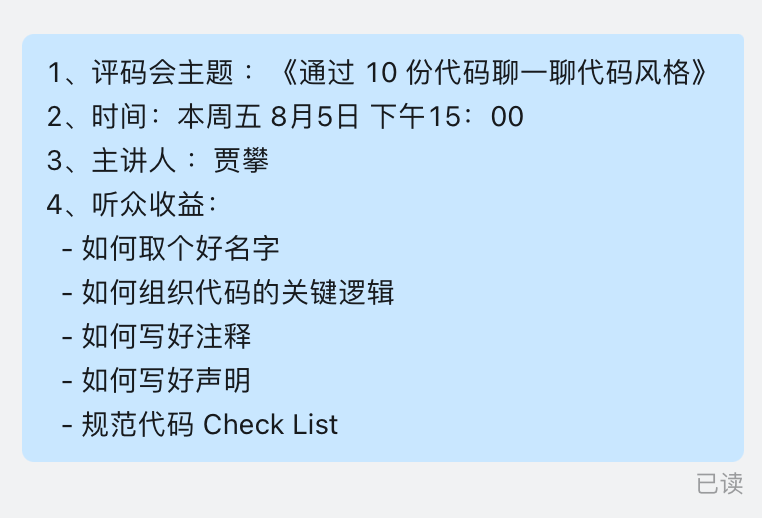
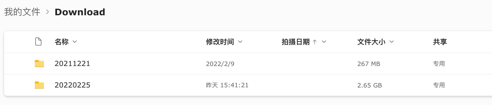

我在今年六月份转岗后被邀请加入了公司的架构组，这个组织的意图是提升公司后端整体技术能力。我们规划了每周一次公司内技术分享，一般在周五进行。
本周二下午架构组例会上讨论本周分享内容时，突然被老板点名希望我做一次分享，内容就是上一周他随机挑选 10 个人写了三道算法题，让我围绕这些代码做个代码质量相关的分享。
周二晚上告诉我要周五分享，留给我整理素材、做 PPT 的时间非常紧，所以晚上回家路上我就开始收集之前看过的资料，回家后又把《代码整洁之道》这本书翻出来，快速把里边之前标记了重点的地方进行了阅读，大致在脑子里形成了一个提纲。
第二天一早也就是周三，在 PPT 还没有开始做之前，老板的助理找我要分享的内容介绍，包括主题、听众收益，我基于昨晚的提纲写了一份介绍交给了她，之后我也就按照这些组织我的 PPT。

之后助理又找我要个人照片，我把去年公司给我拍的一张照片给了它，没想到过了没多久，公司所有投影仪、电视开屏背景就成了我的宣传页，有点受宠若惊。
也被公司其他同事看到纷纷发来问候：

找照片的过程也比较坎坷，因为我也没有艺术照啥的，唯一一张正式点的照片就是公司去年给我拍的形象照，当时因为运气好被评为了公司年度优秀员工。公司当时把这张照片修好后的原图发给了我，我只是打开看了下，并没有额外去保存，所以这次再找的时候就找不到了。我平时有清理 Download 目录的习惯，当时那张照片就是放到了 Download 里了。不过我还有另一个习惯，就是每次在清理 Download 前先把这个目录做个备份，将里边所有内容上传到 OneDrive 中，我会在 OneDrive 中建一个今天日期的目录，然后把此时 Download 中所有文件上传进去，再清理掉本地的文件。当然我还会定期把 OneDrive 日期太久远的目录删除，比如超过 1 年的备份，否则容量不太够用。我抱着试一试的态度在 OneDrive 的备份中找这张照片，竟然被我找到了，果然凡事需要留个后路。

在 Deadline、公司大力宣传的驱动下，我的效率倍增，在今天也就是周四下午完成了第一版的 PPT，自己都感慨效率如此之高，也多亏了之前阅读过的一些资料和书籍，将那些资料结合实际情况做下整理就成了我的 PPT。计划在发布完这篇 blog 后重头过一遍 PPT 做些微调，然后再找个会议室做做练习。
Keynote 可以将文稿转成 PDF、HTML 等格式，我尝试转成 HTML 后发现就是一个标准的前端项目，有一个 index.html 作为入口，这不就可以放到 Cloudflare 上做一个静态站了吗，于是我把这些文件上传到了 Cloudflare，并关联了我的域名：https://codestyle.jiapan.me/，这样就得到了一个可以在线浏览的版本，看了下效果分辨率比原始文档偏低，但又不是不能用🤷🏻♂️。
最后再感叹一声，Deadline 是第一生产力！